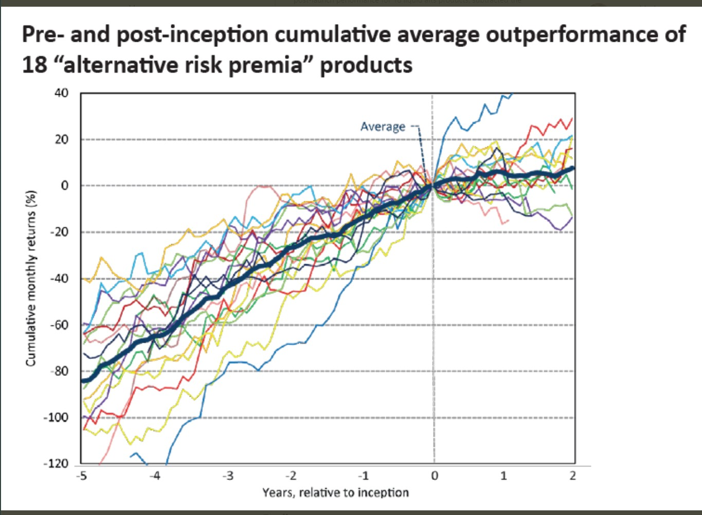
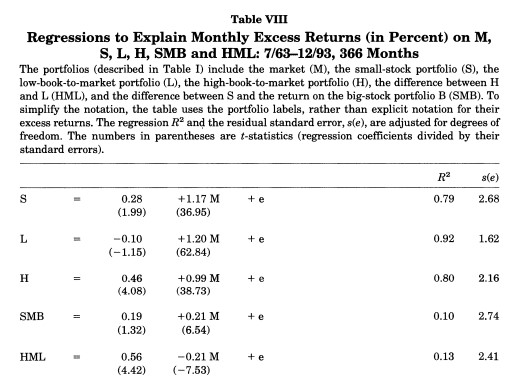

# First we start loading our favourite packages with the names we used to
import numpy as np
import pandas as pd
%matplotlib inline
import matplotlib.pyplot as plt
# import regression package
import statsmodels.api as sm
14.2. Out of sample analysis#
In Chapter 11 we saw how in sample results are often a poor guide to how things behave out of sample
The abit of lookign for large t-stats only partially guard agaisnt that because you will be searching for things that have high t-stats and you are bound to find high t-stat strategies in sample even if no true large alpha strategy exists.
the literature on the biases that the “strategy discovery” process creates is vast and growing and plagues lots and lots of fields beyond investing where data is costly to generate (you cannot ask the market to rerun the last 100 years!)
Literature
Predicting Anomaly Performance with Politics, the Weather, Global Warming, Sunspots, and the Stars by Rober Novy Marx
A comprehensive look at the empirical performance of equity premium prediction
Inspecting whether your discovery is TRUE or just a statistical abnormality is science as much as it is art.
Patterns that are so statisitcally reliable that eveyone can easily detect are unlikely to stay for long unless it is compensation for true risk.
So you are unlikely to find something that makes sense only based on the stats and you will need to use your economic logic to evalaute if you cna understand why the premium is as high as it is. We will discuss this less “quantitative” part of the process in the chapter Equilibrium Thinking.
Here we will highlight the problem and discuss a few statistical techiniques.
Here are a few Twitter threads from people in the industry about this
It has this really nice plot

What does it tell us?
Estimation and Test Samples
Last chapter we used MV logic to constuct a portfolio with the maximum SR.
To evaluate whether this approach works well in the data what can we do?
Jsut looking at the sample where we did the estiamtion is not a realistic description of how you actually deploy the strategy whcih will have to trade on data that was was never seen/digested by your methodology
One way to do it is to split the sample in two:
Estimation sample: This is the sample we will use to estimate moments, construct the portfolios, and so on. That is where your discovery process will take place. Where you will play with different parameters of the strategy. Statistical tests here are not valid
Test sample: You will use this to run statistical test and see how your meothod to construct weights .
def SR(R,W=[],freq=12):
if np.empty(W):
sr=R.mean()/R.std()*freq**0.5
else:
r=R@W
sr=r.mean()/r.std()*freq**0.5
return sr
Aplication 1: optimal combitation of market and value strategies
Below is our full sample optimal portfolio
We will split our sample into two halves:
take all observations from odd months in even years and even months in odd years (i.e., if starting in 1980, this would look like: 01/1980, 03/1980, … , 11/1980, 02/1981, 04/1981, … 12/1981, 01/1982, 03/1982, …); and
the opposite (take all observations from even months in even years and odd months in odd years).
A nice thing to do in halves is that we can cross-validated use first sample 1 as estiamtion sample and sample2 as test sample, and then invert
If you have lot of data one migh split the data in 5 folds and do the estimation in one and test on the rest.
# loading the data
from pandas_datareader.famafrench import get_available_datasets
import pandas_datareader.data as web
ds_names=get_available_datasets()
from datetime import datetime
start = datetime(1926, 1, 1)
ds = web.DataReader(ds_names[0], 'famafrench',start=start)
df=ds[0][:'2021-3']
df
| Mkt-RF | SMB | HML | RF | |
|---|---|---|---|---|
| Date | ||||
| 1926-07 | 2.96 | -2.30 | -2.87 | 0.22 |
| 1926-08 | 2.64 | -1.40 | 4.19 | 0.25 |
| 1926-09 | 0.36 | -1.32 | 0.01 | 0.23 |
| 1926-10 | -3.24 | 0.04 | 0.51 | 0.32 |
| 1926-11 | 2.53 | -0.20 | -0.35 | 0.31 |
| ... | ... | ... | ... | ... |
| 2020-11 | 12.47 | 5.48 | 2.11 | 0.01 |
| 2020-12 | 4.63 | 4.81 | -1.36 | 0.01 |
| 2021-01 | -0.03 | 7.19 | 2.85 | 0.00 |
| 2021-02 | 2.78 | 2.11 | 7.08 | 0.00 |
| 2021-03 | 3.09 | -2.48 | 7.40 | 0.00 |
1137 rows × 4 columns
W=df[['Mkt-RF','HML']].mean()@np.linalg.inv(df[['Mkt-RF','HML']].cov())
# formula for unlevereaged portfolio vol
vol_unlevered=(df[['Mkt-RF','HML']].mean()@np.linalg.inv(df[['Mkt-RF','HML']].cov())@df[['Mkt-RF','HML']].mean())**0.5
W_lev=W*(df['Mkt-RF'].std()/vol_unlevered)
Optimalportfolio= df[['Mkt-RF','HML']] @ W_lev
SR(Optimalportfolio)
0.5010016962253796
Letss construct both samples by using a function that returns True if the number is odd and then apply this function to the months and years of our dataset.
def is_odd(num):
return num % 2 != 0
evenyear_oddmonth=(is_odd(df.index.year)==False) & (is_odd(df.index.month)==True)
oddyear_evenmonth=(is_odd(df.index.year)==True) & (is_odd(df.index.month)==False)
sample1=evenyear_oddmonth | oddyear_evenmonth
# sample2 is just the opposite of sample 1.What is true becomes false and what is false becomes true
sample2=~sample1
Lets construct a function that takes the sample and returns the SR
def Strategy(df1,estsample):
W=df1[estsample].mean()@np.linalg.inv(df1[estsample].cov())
# formula for unlevereaged portfolio vol
vol_unlevered=(df1[estsample].mean()@np.linalg.inv(df1[estsample].cov())@df1[estsample].mean())**0.5
W_lev=W*(df1['Mkt-RF'][estsample].std()/vol_unlevered)
Optimalportfolio= df1[~estsample] @ W_lev
return SR(Optimalportfolio)
print('Optimal portfolio perfomance in sample 2 (estimation sample 1)')
print(Strategy(df[['Mkt-RF','HML']],sample1))
print('Market perfomance in sample 2')
print(SR(df[['Mkt-RF']][sample2]))
print('Optimal portfolio perfomance in sample 1 (estimation sample 2)')
print(Strategy(df[['Mkt-RF','HML']],sample2))
print('Market perfomance in sample 1')
print(SR(df[['Mkt-RF']][sample1]))
Optimal portfolio perfomance in sample 2 (estimation sample 1)
0.5398648872236791
Market perfomance in sample 2
Mkt-RF 0.502882
dtype: float64
Optimal portfolio perfomance in sample 1 (estimation sample 2)
0.4543626900658743
Market perfomance in sample 1
Mkt-RF 0.386996
dtype: float64
In terms of Sharpe Ratios it seems to pass the test.
But this is simply one number. We can use our regression approach to formally test if indeed the optimal portfolio is likely to add value to the market
Lets modify our function to include the estimation of the alpha
While we are at it I will also add a results container so I can store the test sample SR and vol of the optimal portfolio and the market and the alpha and t-value as well
results=pd.Series([],index=[],dtype=float)
results.at['test']=1.6
results
test 1.6
dtype: float64
def Strategy(df1,estsample):
results=pd.Series([],index=[],dtype=float)
W1=df1[estsample].mean()@np.linalg.inv(df1[estsample].cov())
# formula for unlevereaged portfolio vol
vol_unlevered=(df1[estsample].mean()@np.linalg.inv(df1[estsample].cov())@df1[estsample].mean())**0.5
W_lev=W1*(df1['Mkt-RF'][estsample].std()/vol_unlevered)
Optimalportfolio= df1[~estsample] @ W_lev
results.at['Optimal:SR']=SR(Optimalportfolio)
results.at['Optimal:std']=Optimalportfolio.std()*12**0.5
results.at['MKT:SR']=SR(df1[~estsample]['Mkt-RF'])
results.at['MKT:std']=df1[~estsample]['Mkt-RF'].std()*12**0.5
# now run the regression
x= sm.add_constant(df1[~estsample]['Mkt-RF'])
y= Optimalportfolio.copy()
regresult= sm.OLS(y,x).fit()
results.at['alpha']=regresult.params[0]
results.at['t(alpha)']=regresult.tvalues[0]
return results
print('Results for test sample 2 (estimation sample 1)')
print(Strategy(df[['Mkt-RF','HML']],sample1))
print('Results for test sample 1 (estimation sample 2)')
Strategy(df[['Mkt-RF','HML']],sample2)
Results for test sample 2 (estimation sample 1)
Optimal:SR 0.539865
Optimal:std 18.266698
MKT:SR 0.502882
MKT:std 18.065852
alpha 0.171085
t(alpha) 1.452817
dtype: float64
Results for test sample 1 (estimation sample 2)
Optimal:SR 0.454363
Optimal:std 18.799615
MKT:SR 0.386996
MKT:std 18.989705
alpha 0.156391
t(alpha) 1.701049
dtype: float64
We see several intersting things
The vol targeting works pretty well out of sample. Our portfolio ended up with a similar vol to the market.
Why is that? Is it surprising/expected? Do you expect to do as well in vol targeting in real life trading? Why why not?
The alphas are there (given that the SR were higher , this mechanically means that the alphas would be non zero), but the t-values do not suggest this was a super robust feauture of the data.
What does that mean? It means that \(\sigma(r^{optimal}_t-\beta r^{mkt}_t)\) was sufficienly volatile in the test sample that there is a greater than 10% change that the market is tangency in sample 2 and a slight lower than 10% chance that is tangency in sample 1.
this is not bad, but it is not good either. If both were above 2 it would be prettry solid.
How to split your sample
You can split the sample in a variety of ways. I did a fancy one above just to showcase it.
But I would typically recommend to keep it simple and simply split the sample down the middle.
This has the advantage of keeping any non-homocedastic features of the data intact. For example, volatiltiy is highly clustered, so when we split the way we split above we are almost makign sure that the volatiltiy is about the same in both months. So this is not a great method to split if your strategy really depends on timing volaitltiy well.
You don’t even need to split the samples equally, but you have to have in mind that a long sample is useful to both get precise point estimates (so you need a long estiamtion sample), but a logn sample is also required to have enought power to test. IF you make the test sample too short, you are guarantteing that you will fail to reject your reference portfolio
Fine tuning your strategy
We know have three piece of data.
Estimation sample: The estiamtion sample is exactyl as before. This is the sample we will use to estimate moments, construct the portfolios, and so on. That is where your discovery process will take place. Where you will play with different parameters of the strategy. Statistical tests here are not valid
But now the Test sample will change and we will introduce the concept of the hold out sample
Test sample: You will use this to run statistical test and see how a particular parameter configuration works on unseen data. In practice you will do the testing multiple times. For example in this example we will play with the look back windown of the covariance estimator, mean estimator and so on.
So information of the test sample will leak to your method as you do the search.
You might settle on a particular specification becasue it worked on this particular sample, but not becasuse it is the most robust out of sample
So when you are searching for the specification that works you have the be very careful to not search “TOO MUCH”” so you are overfitting the Test sample
Holdout sample: This is data that your method never looked. That is the true test. You only look at it once you are confident you have a good specification. The hold sample are a much closer reflection of the reality of trading.
of course it is impossible to really reproduce the reality of trading on future data and information of the holdout sample might leak through the fact that the researcher know what happened in that sample: there was a fiancial crash, a crypto boom, value did poorly and so on.
This knowledge migth implicly guide your search process.
So you have to be mindful of why you are makign the choices you are making to gaurd against this form of look-ahead bias
Aplication 2: fine-tuning the look-back window
Once you start playing with the look-back window that we use to estimate our moments we will need to figure out what works.
The trade-off here is:
If you make to short you jsut pick up noise
If you make too long the moments might not be that informative about future data
Particularly true in he case of volatility, but also true for correlations
We will split the sample in two. The first half will be estiamtion+test, second hald will be hold out
df
| Mkt-RF | SMB | HML | RF | |
|---|---|---|---|---|
| Date | ||||
| 1926-07 | 2.96 | -2.30 | -2.87 | 0.22 |
| 1926-08 | 2.64 | -1.40 | 4.19 | 0.25 |
| 1926-09 | 0.36 | -1.32 | 0.01 | 0.23 |
| 1926-10 | -3.24 | 0.04 | 0.51 | 0.32 |
| 1926-11 | 2.53 | -0.20 | -0.35 | 0.31 |
| ... | ... | ... | ... | ... |
| 2020-11 | 12.47 | 5.48 | 2.11 | 0.01 |
| 2020-12 | 4.63 | 4.81 | -1.36 | 0.01 |
| 2021-01 | -0.03 | 7.19 | 2.85 | 0.00 |
| 2021-02 | 2.78 | 2.11 | 7.08 | 0.00 |
| 2021-03 | 3.09 | -2.48 | 7.40 | 0.00 |
1137 rows × 4 columns
sample1=df.index<=df.iloc[int(np.floor(df.shape[0]/2))].name
sample2=df.index>df.iloc[int(np.floor(df.shape[0]/2))].name
print('Results for test sample 2 (estimation sample 1)')
print(Strategy(df[['Mkt-RF','HML']],sample1))
print('Results for test sample 1 (estimation sample 2)')
Strategy(df[['Mkt-RF','HML']],sample2)
Results for test sample 2 (estimation sample 1)
Optimal:SR 0.644581
Optimal:std 11.635633
MKT:SR 0.500860
MKT:std 15.859210
alpha 0.258585
t(alpha) 2.764342
dtype: float64
Results for test sample 1 (estimation sample 2)
Optimal:SR 0.449700
Optimal:std 28.292410
MKT:SR 0.406965
MKT:std 20.866012
alpha 0.185466
t(alpha) 1.308342
dtype: float64
We can already see that the volatility targeting aspect worked substantially less wll. We undershoot the volatiltiy in sample 2 and overshoot by a lot in sample
We will now do the estimation fine-tuning. Lets start by building a code that gets our desired window, do the estiamtion and construct the return series on the test sample
lets start with 36 months
estsample=sample1
window=36
Returns_test=pd.DataFrame([],index=df.index,dtype=float)
df1=df[['Mkt-RF','HML']][estsample].copy()
results=pd.Series([],index=[],dtype=float)
for d in df1.index[window:]:
df_temp=df1[d-window:d-1].copy()
W1=df_temp.mean()@np.linalg.inv(df_temp.cov())
vol_unlevered=(df_temp.mean()@np.linalg.inv(df_temp.cov())@df_temp.mean())**0.5
W_lev=W1*(df_temp.std()/vol_unlevered)
Returns_test.at[d,'Opt']= df1.loc[d] @ W_lev
Returns_test.at[d,'Mkt-RF']= df1.loc[d,'Mkt-RF']
Returns_test.plot()
<AxesSubplot:xlabel='Date'>
Note that we have no observations early on as we need at the 36 months to estimate and none in the second half, that is the sample that we will hold out
Now that we have this code we can put ina function and simply evaluate at a whole unch of different windows
def RollingEval(df,window,estsample):
Returns_test=pd.DataFrame([],index=df.index,dtype=float)
df1=df[['Mkt-RF','HML']][estsample].copy()
for d in df1.index[window:]:
df_temp=df1[d-window:d-1].copy()
W1=df_temp.mean()@np.linalg.inv(df_temp.cov())
vol_unlevered=(df_temp.mean()@np.linalg.inv(df_temp.cov())@df_temp.mean())**0.5
W_lev=W1*(df_temp.std()/vol_unlevered)
Returns_test.at[d,'Opt']= df1.loc[d] @ W_lev
Returns_test.at[d,'Mkt-RF']= df1.loc[d,'Mkt-RF']
return Returns_test
Returns_test=RollingEval(df,36,sample1)
Returns_test.plot()
<AxesSubplot:xlabel='Date'>
windows=[24,36,48,60,72]
results=pd.DataFrame([],index=[],columns=windows,dtype=float)
for w in windows:
Returns_test=RollingEval(df,w,sample1)
results.at['Optimal:SR',w]=SR(Returns_test.Opt)
results.at['Optimal:std',w]=Returns_test.Opt.std()*12**0.5
results.at['MKT:SR',w]=SR(Returns_test['Mkt-RF'])
results.at['MKT:std',w]=Returns_test['Mkt-RF'].std()*12**0.5
# now run the regression
x= sm.add_constant(Returns_test['Mkt-RF'])
y= Returns_test.Opt.copy()
regresult= sm.OLS(y,x,missing='drop').fit()
results.at['alpha',w]=regresult.params[0]
results.at['t(alpha)',w]=regresult.tvalues[0]
results
| 24 | 36 | 48 | 60 | 72 | |
|---|---|---|---|---|---|
| Optimal:SR | 0.729121 | 0.662446 | 0.559205 | 0.613927 | 0.604021 |
| Optimal:std | 18.261577 | 17.478699 | 17.143940 | 16.599580 | 14.608167 |
| MKT:SR | 0.376006 | 0.349442 | 0.395631 | 0.442297 | 0.599587 |
| MKT:std | 21.156627 | 21.225400 | 20.875629 | 20.531663 | 19.393643 |
| alpha | 1.168284 | 0.956486 | 0.690608 | 0.703350 | 0.426639 |
| t(alpha) | 5.165939 | 4.350827 | 3.221188 | 3.379011 | 2.449945 |
From this it seems that 24 looks best.
We will now look at how the 24 performed in the Hold out sample
windows=[24]
results=pd.DataFrame([],index=[],columns=windows,dtype=float)
for w in windows:
Returns_test=RollingEval(df,w,sample2)
results.at['Optimal:SR',w]=SR(Returns_test.Opt)
results.at['Optimal:std',w]=Returns_test.Opt.std()*12**0.5
results.at['MKT:SR',w]=SR(Returns_test['Mkt-RF'])
results.at['MKT:std',w]=Returns_test['Mkt-RF'].std()*12**0.5
# now run the regression
x= sm.add_constant(Returns_test['Mkt-RF'])
y= Returns_test.Opt.copy()
regresult= sm.OLS(y,x,missing='drop').fit()
results.at['alpha',w]=regresult.params[0]
results.at['t(alpha)',w]=regresult.tvalues[0]
results
| 24 | |
|---|---|
| Optimal:SR | 1.093922 |
| Optimal:std | 13.521201 |
| MKT:SR | 0.545364 |
| MKT:std | 15.462008 |
| alpha | 0.989791 |
| t(alpha) | 6.354080 |
Even better!
That is pretty good
you can see the t-stat goign through the roof and the SR of the optimal portfolio is almost twice as large as only investing in the market
Note that here the bulk of the gains are form Timing across these factors.
You might also look to time between cash and this optimal portfolio
The idea would be exactyl the same. You get a signal for the expected return and/or volatiltiy of the optimal portfolio
You already have one here, but the fact that the 24 months worked great to time across factors does not mean that it will work great to time between the factor and cash
But you would have some way to decide the weigths perhaps based on the mean-variance criteria, see how it works in the test sample across a variety of signal specifications and then you would ultimaterly test on the hold out sample
Publication bias (or Famous bias or incubation bias…)
We discussed that we often look at past perfomance exactly becasue a strategy did well. This mechanism of selection renders our statisitcal analysis biased in the direction of findings that the strategy is amazing.
It is often hard to deal with this becasue you need all the data of strategies that look like the one you are interested from the perspective of someone in the start of the relvant sample. That is hard.
One way to deal with this is to use some hard metric of saliency. For example, in chapter we used google trends to see when Bitcoin became popular and we did our analysis after that.
You could imagine doing that for fund managers as well. While google trends is only available after 2004 there is data from New York Times and Wall Street Journal that allows you to go back to the start of the Last century. (for example, I use data like that that in this paper)
A setting where we can do this very cleanly is in the context of acadmic work. We know exactyl when the paper was first published and what the sample that was used there
A nice paper that investigates this for a bunch of strategies is Does academic research destroy stock return predictability?
Aplication: Evalauting the publication bias in Fama French 1996, Multifactor Anomalies…
Teh original paper has the followign key table

You see here that the sample runs from 63 to 93. Back in 93 we didn’t have digitalized accounting data that went back to the 30’s
Looking at the very last row we see that the alpha of the HML withresepect to HML is enormous, 0.56% per month, and it has a negative beta with the market!
so now we will look at two different samples that the authors never looked before doing their study.
The pre 63 sample
the post 93.
sample1=df.index<df.loc['1963-7'].name
sample2=df.index>df.loc['1993-12'].name
sample3=((df.index>=df.loc['1963-7'].name) &(df.index<=df.loc['1993-12'].name))
def Strategy(df1,sample):
results=pd.Series([],index=[],dtype=float)
x= sm.add_constant(df1[sample]['Mkt-RF'])
y= df1[sample]['HML'].copy()
regresult= sm.OLS(y,x).fit()
results.at['HML:SR']=SR(y)
results.at['MKT:SR']=SR(df1[sample]['Mkt-RF'])
results.at['alpha']=regresult.params[0]
results.at['beta']=regresult.params[1]
results.at['t(alpha)']=regresult.tvalues[0]
results.at['AR']=regresult.tvalues[0]/regresult.resid.std()
W=df1[sample].mean()@np.linalg.inv(df1[sample].cov())
W=W/np.sum(W)
results.at['HML weight on MVE']=W[1]
return results
print('Pre publication sample')
print(Strategy(df[['Mkt-RF','HML']],sample1))
print('Publication sample')
print(Strategy(df[['Mkt-RF','HML']],sample3))
print('Post publication sample')
print(Strategy(df[['Mkt-RF','HML']],sample2))
Pre publication sample
HML:SR 0.346962
MKT:SR 0.457366
alpha 0.113160
beta 0.371094
t(alpha) 0.661317
AR 0.185219
HML weight on MVE 0.342709
dtype: float64
Publication sample
HML:SR 0.608203
MKT:SR 0.325699
alpha 0.542778
beta -0.207224
t(alpha) 4.257801
AR 1.755981
HML weight on MVE 0.696805
dtype: float64
Post publication sample
HML:SR 0.079270
MKT:SR 0.580553
alpha 0.113256
beta -0.054502
t(alpha) 0.637514
AR 0.201533
HML weight on MVE 0.228248
dtype: float64
what do we learn?
In the Pre-publication sample HML has a respectable SR, but the asset is much more correlated with the market so it’s betas with respect to the market leaves only a statistically insignifcant 0.37% per month, 1.2% per year.
Thus in the pre-sample the HML has a nice SR but the CAPM works so you would not have gained/lost too much of tilting your portfolio towards the HML strategy
In the post-publication sample the results are very ugly
Sharpe ratio is now 0.08–compared with the 0.58 SR on the market
the alpha is still about the same as in the pre-publication, but now the betas become negative
the HML premium goes away almost completely
To have a sense of the shift we can look at the risk-return trade-off of the market and HML across samples.
The optimal weight on HML shifts from 0.72 in the publication sample to 0.34 in the pre publication and 0.2 in the post publication
someone that jsut invested on the market would be actually be closer to the optimal portfolio than someone that invested 0.7 in HML
Does that mean it was data snooping?
We don’t know. It is possible that the publication drove people to the strategies which made the resuls go away goign forward. This paper I cited before argues that this is the case